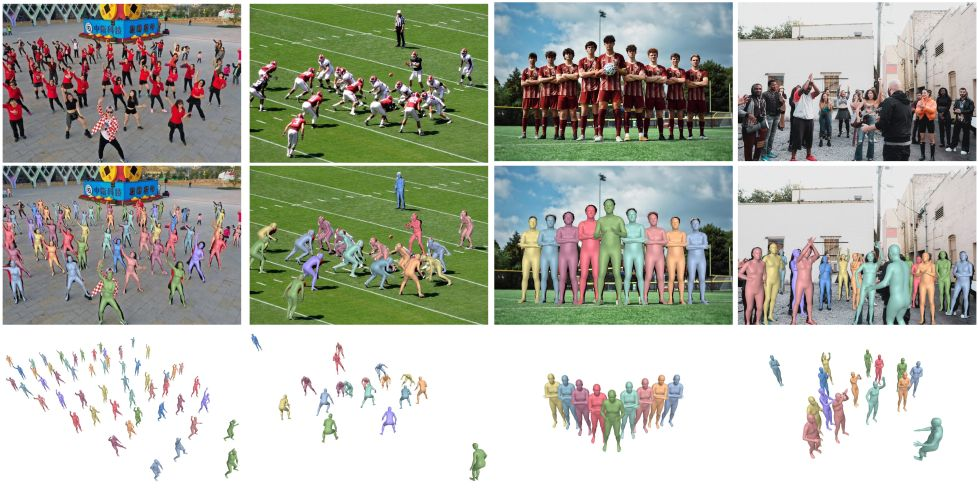

IEEE/CVF International Conference on Computer Vision (ICCV), 2023
Reconstructing Groups of People with Hypergraph Relational Reasoning
We exploit human collectiveness and correlation in crowds to improve human mesh recovery in large-scale crowded scenes (more than 50 people).
Abstract
Due to the mutual occlusion, severe scale variation, and complex spatial distribution, the current multi-person mesh recovery methods cannot produce accurate absolute body poses and shapes in large-scale crowded scenes. To address the obstacles, we fully exploit crowd features for reconstructing groups of people from a monocular image. A novel hypergraph relational reasoning network is proposed to formulate the complex and high-order relation correlations among individuals and groups in the crowd. We first extract compact human features and location information from the original high-resolution image. By conducting the relational reasoning on the extracted individual features, the underlying crowd collectiveness and interaction relationship can provide additional group information for the reconstruction. Finally, the updated individual features and the localization information are used to regress human meshes in camera coordinates. To facilitate the network training, we further build pseudo ground-truth on two crowd datasets, which may also promote future research on pose estimation and human behavior understanding in crowded scenes. The experimental results show that our approach outperforms other baseline methods both in crowded and common scenarios.
Dataset
We follow the previous pseudo annotator (EFT) to build 3D pseudo ground-truth for Panda and CrowdPose. We also manually filter the incorrect estimations in the camera view. Different from previous pseudo annotators, the adaption explicitly considers the crowd interactions and constraints in multi-person scenarios. The 3D models in the final dataset have plausible ordinal relationships and are consistent with image observations.
Results

Our method produces accurate body poses and reasonable spatial distribution on Internet images. Our method is more robust to scale variations and occlusions. In addition, the proposed approach can also reconstruct crowds with more reasonable ordinal relationships.
Materials
|
Related links
|
|
Reference
Buzhen Huang, Jingyi Ju, Zhihao Li and Yangang Wang. "Reconstructing Groups of People with Hypergraph Relational Reasoning". IEEE/CVF International Conference on Computer Vision (ICCV), 2023.
Acknowledgments: This work was supported in part by the National Natural Science Foundation of China (No. 62076061), the Natural Science Foundation of Jiangsu Province (No. BK20220127).
- © 2019 Dr. Yangang Wang. All Rights Reserved.